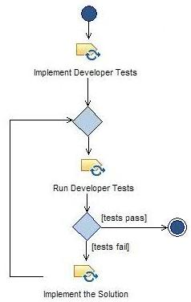

| 实践：Test Driven Development |
 |
|
| 内容引用 | |
|---|---|
| 输入 |
The test driven development practice reduces time to market by reducing the amount of time needed to integrate and stabilize builds. It improves productivity by finding and fixing errors close to the time that they are introduced. And it increases the overall quality of the software by guaranteeing that all new code has been tested, and all existing code has been regression tested, prior to check-in. Developers use TDD to create the Implementation and the Developer Tests. See the How to Adopt the Test Driven Development Practice for information on navigating the TDD Practice. |
TDD was originally part of Kent Beck's Extreme Programming process. It's now also used in many other Agile and non-Agile contexts. |
Test driven development (TDD) is the practice of writing developer tests and implementation code concurrently and at a very fine level of granularity. In test driven design, the developer first writes a small test to validate a small change, runs the test to ensure that it fails (a sanity check), and then writes just enough implementation code to make that developer test run successfully. This cycle is short and it rarely goes beyond 10 minutes. In each cycle, the tests come first. Once a test is done, the developer goes on to the next test until there are no more tests to be written for the implementation of the work item currently under development.  The practice of test driven development changes how the developer thinks. Tests are not written as an afterthought. Instead, developer tests are written as part of the everyday, every minute way of building software. What are the advantages of test driven design?
See Using TDD in context for more information. |
If you are just getting started with TDD or developer testing in general, you will need to know why developer testing is a good idea, and the basics of what makes good developer tests. A good starting place is this Kent Beck presentation. Kent Beck is the creator of Extreme Programming, which is where TDD was originally defined. Here are some useful links to expand your understanding of TDD. Make use of these as you learn to enact TDD. Some of these links are also good resources for on-going support and information.
Once you are familiar with the basics of TDD, select various tasks to view more detail about what needs to be done to perform the task. If you will be creating a capability pattern or delivery process that includes TDD, see Using TDD in context. This shows one example of how TDD can be used in conjunction with other activities and capability patterns to create a pattern for developing software. This is only one possible example: there are many was to use TDD with other development practices. |
This program and the accompanying materials are made available under the |